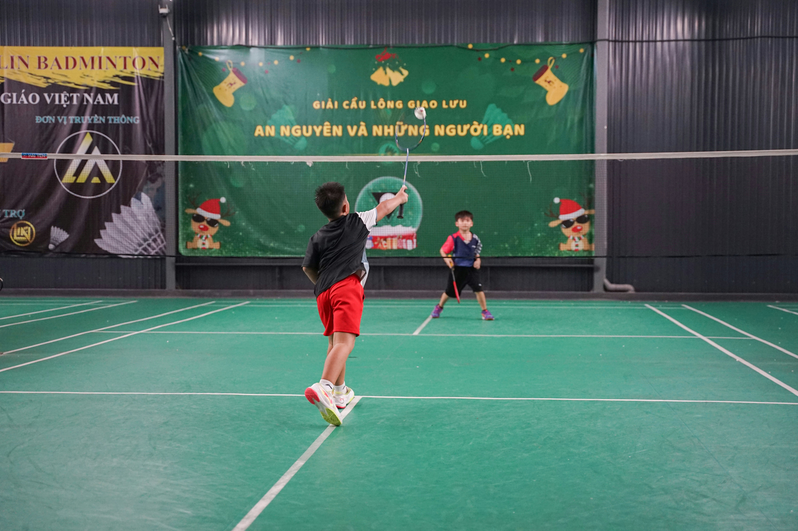
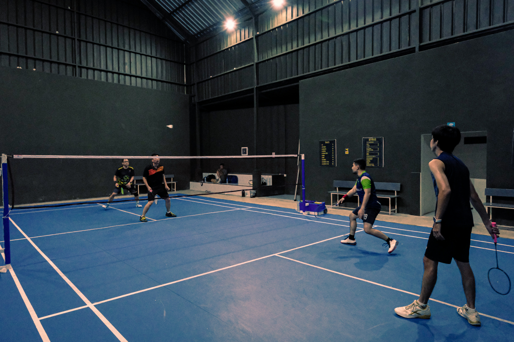
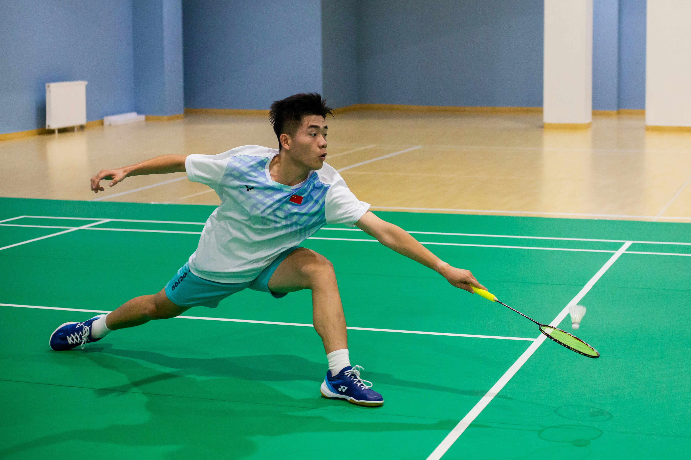
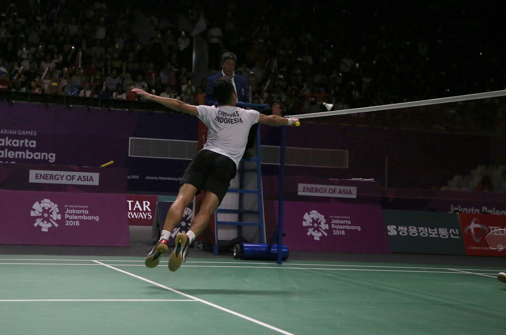
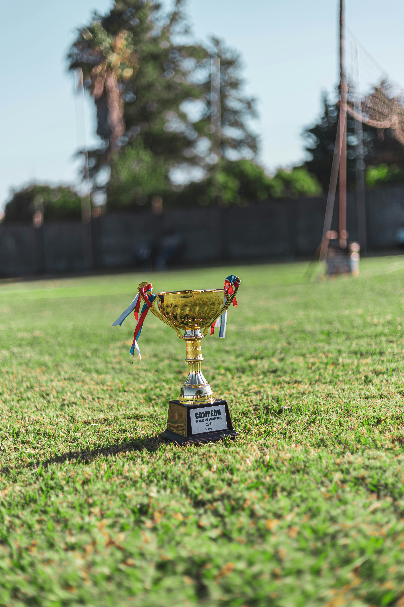

My Journey to State-Level Badminton
From a School Court to Competitive Badminton
What started as simply playing badminton for my school gradually became one of the most important sporting journeys of my life.
Scroll to follow my journey ↓
What started as simply playing badminton for my school gradually became one of the most important sporting journeys of my life.
Scroll to follow my journey ↓
My competitive badminton journey began at school. At first, badminton was simply a sport that I enjoyed playing, but becoming part of my school team gave me my first experience of representing something beyond myself.
Training with the team and playing school matches introduced me to competitive badminton. I began understanding that the sport required much more than simply hitting a shuttle across the court. Footwork, positioning, consistency and decision-making all became important parts of the game.

As my interest in badminton grew, I wanted to take the sport more seriously. I eventually joined UPBA, a badminton club where my training became more structured and competitive.
This was an important transition for me. Instead of only practising for school competitions, I was now training regularly alongside players who were equally serious about improving their game.
The intensity of training increased, and I began developing stronger technical skills, better movement around the court and a much greater understanding of competitive play.

Training at UPBA eventually gave me opportunities to represent the club in district-level competitions which opened the door to higher levels of competition.
These tournaments felt very different from ordinary practice matches. Every point was crucial, the opponents were stronger, and I felt far more pressured on the court.
Competing at this level taught me how to stay focused during close matches, adjust my strategy against different opponents and continue playing confidently even when a match is not going my way.

Over time, the hours spent practising and competing allowed me to progress beyond district competitions and participate in larger tournaments such as MSSA and DSO competitions in India.
Reaching this level was important to me because it showed how far I had progressed from simply joining my school badminton team. The competition was stronger, the matches were more draining, and every tournament challenged me to do better.
Playing against athletes from different schools, clubs and regions also exposed me to different playing styles and showed me the level of discipline required to compete seriously in the sport.

Every match was another step forward.
Back to the Beginning ↑